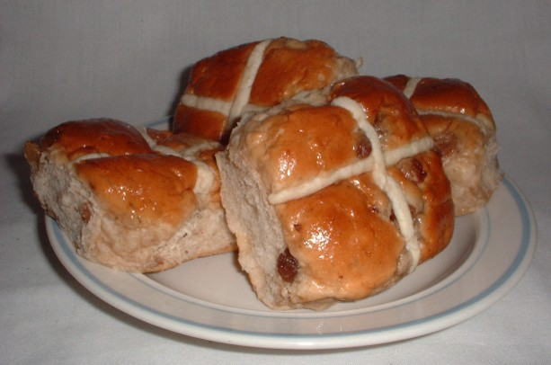

History
Earliest bread type dates back around 14,600 years. These flat bread-like bread were made by Natufian foragers.
The earliest leavened bread was made as early as 6,000 BC in southern Mesopotamia.
In Ancient Greek there was popular food called "maza". Maza was similiar to bread, but it didn't involve either baking or leavening. Maza was made by using barley meal.
Culture
Bread has been a fundamental part of many cultures throughout history globally, often relating to community and social practices.
Especially in religious and ceremonial contexts, bread has played a significant role.
For example, in Christianity, bread is used in the sacrament of the Eucharist, symbolizing the body of Christ. In Judaism, challah bread is a traditional part of the Sabbath meal.

Cross buns are a traditional type of bread eaten during Good Friday.